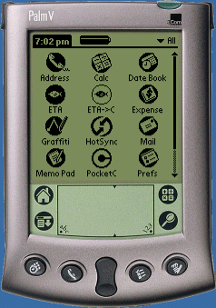

ETA for the Palm Pilot
This is the implementation of Mike Taylor's ETA language for Palm OS.If you have a palm pilot, then this is ideal for when you're on a train or plane and have nothing better to do that to invent your next self-documenting eta program.
It consists of two fully fledged palm applications (.prc files) that can be installed and used on any Palm OS device. The first is a standalone ETA interpreter, the second is an ETA to C translator which produces programs that may then be compiled with Pocket C.
The Interpreter
Once installed through the hotsync process (or beamed to you from another ETA fan), your screen should look something like this.
The application will consume 42k, which is mostly due to the rather large libraries that the C compiler insists on including - I am working on a solution for this, but in the mean time it is the smallest it can be.
The ETA interpreter expects your ETA program to be in a memo entitled ETA as shown.
There is a limit of 256 lines on your program. The interpreter will reject any program longer than this. I considered this a reasonable figure, as a Palm memo can be at most 4k. If you run into trouble, you'll need to put more characters on each line!
When running, the interpreter presents a memo style form where it will write output and echo any input. Note that this form only has a limited amount of space available - if your program produces more than a little output you'll need to press the clear button from time to time.
In the demonstation here, I am running my cat identifier program, the complete text of which you can find below.
As you can see, Tiddles did not pass the test. The interpreter uses an alert box for errors and other messages.
Test Program
Here is my patented 1-Meow™ cat identifier. Note that this program makes use of the halibut instruction to rotate the top three items on the stack, thereby proving that the instruction functions correctly (which it didn't on my first version of the interpreter!)
ntiteo: nice cat
ntsseo: bad cat
natieo: nice cat
nahoeo: bad cat
nttaeo: nice cat
niieo: no such cat
tate: mad cat
ine: happy cat
naehsnteh: nightmare cat
ntoes: naughty but nice cat
nttetn: a very fat cat
naee: nearly a tiger in fact
atnooet: a cat came - but nice or not?
ntiteo: nice cat
natheo: nice cat
nahteo: nice cat
nahoeo: nice cat
niieo: nice cat
nahteo: nice cat
ntsseo: nice cat
naaieo: nice cat
nineo: nice cat
ntoeonet: good kitty
ntaoeo: bad cat
ntsseo: bad cat
nahaeo: bad cat
niieo: bad cat
nahteo: bad cat
ntsseo: bad cat
naaieo: bad cat
nineo: bad cat
ntoeonet: nasty kitty
You can find some of my other ETA programming examples here.
The ETA to C Translator

After installing the translator, it should show up on your device as you can see on the left. The translator expects your program to be stored in a memo entitled ETA2C. After running your program through the translator, the C program output will be in a memo entitled // etaout. This may then be compiled by Pocket C.
Programs compiled in this way will run very much quicker than when using the interpreter. These two screenshots demonstrate the improvement using hello2.eta as the source code. The translator uses some simple optimisation strategies, including removing obvious no-op sequences and ignoring ends of lines that are always jumped over using sequences like AAT or NTEAT.
Source Code for the Interpreter
This program is written for a cross compiler called Pocket C. The program is not long, only about 200 lines, and is readily readable - I even put some comments in.
Pocket C does not produce very fast applications - for instance the example program bottles.eta takes over two hours to run on my Palm V. Therefore, you will notice that I have written the code in such a way to be as efficient as possible, at the expense of programming niceties. On the other hand, you could always compile your programs using the translator.
The source code is here. If you want to compile it, you'll also need the two icon graphics, the small one and the big one.
{kind=link}
{kind=link}
Source Code for the Translator
It's pretty ugly, you probably don't what to see it. The icons are here - the small one and the big one.
{kind=link}
{kind=link}